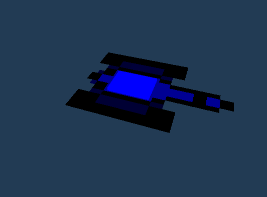
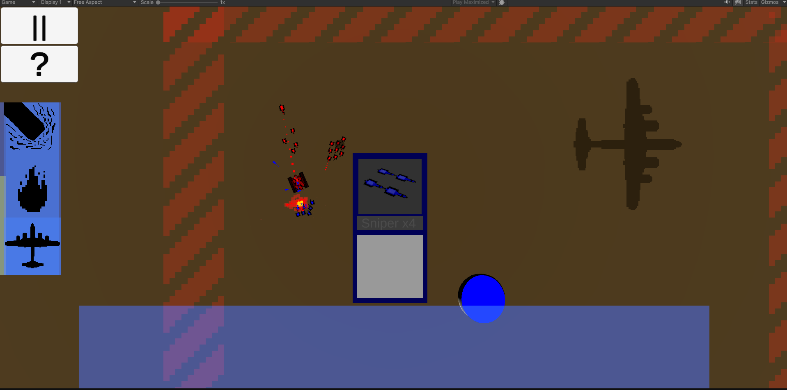
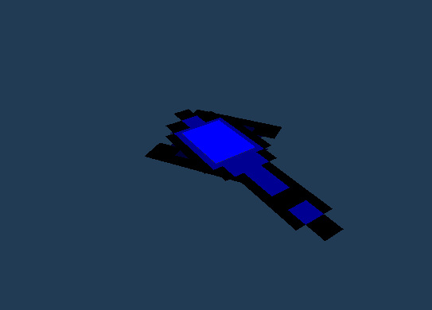
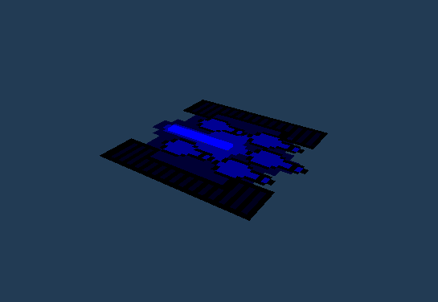
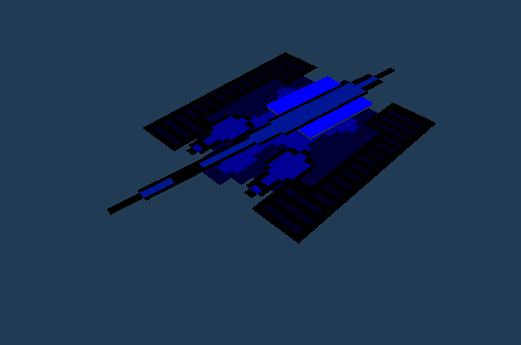
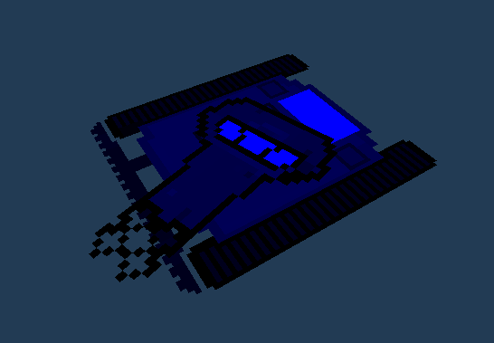
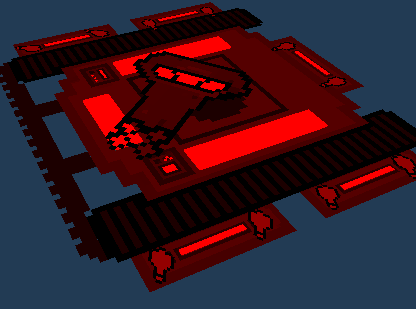
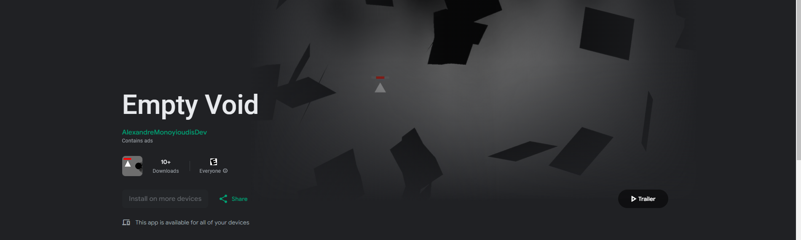

Regular tanks
Regular tanks are good at swarming large enemies. They are cheap and can also serve as distractions. These tanks are the best value, but are vulnerable to attacks that can hit multiple tanks.
I am a software developer who will work on challenging, meaningful projects. I am attracted to the fast pace of innovation in technology and how mathematical solutions and coding can solve simple to complex problems in the world. I am eager to gain practical experience in the workplace and expand my skills. I have completed my Google software engineering apprenticeship. This apprenticeship allowed me to learn from leading experts in the industry while working on Health Connect and Health Connect Toolbox (Health Connect's developer toolbox). During my apprenticeship, I worked on a Higher National Diploma hosted by Makers alongside my Google projects, receiving a merit. In my apprenticeship, I showed a high level of adaptability when learning new technologies.
Programming is my passion and how I spend my free time. For example, I created a game using Unity 2D called Empty Void. The game runs efficiently, uses local save files, and can be played on Android devices. I also created a repository for this game on GitHub and published my applications and programming projects there. Another project is a calculator (XOcalc) for Crossout. Using GitHub, I released it so my friends could download it. I use branches to develop features and store my progress on GitHub. I enjoy problem solving and persevere until I have a solution, whether that means teaching myself new programming skills or researching alternative solutions. I enjoy solving software issues as well as mechanical problems on my drone and 3D printer. Researching topics such as astronomy, Unity, robotics, 3D printing, and learning new skills is what I enjoy. My programming knowledge includes Java, Kotlin, C#, Unity, Python, PyGame, Xamarin.Forms, HTML, XAML, and CSS. I am also familiar with VS Code, Visual Studio, and comfortable using the Linux terminal. My other projects include a multi-level game created in PyGame with dialogue and my own pixel art, with a playthrough lasting around 15 minutes; a clicker game created in PyGame with a playthrough lasting around 30 minutes and working save files; an application that can send emails; and a space invader-style game created in Unity 2D.
I thoroughly enjoyed my work experiences and received praise for my work. At Sabin Ltd (Data Consultants), I worked as a back-end website developer. Working independently with two other students, we converted multiple files into a usable format with pandas and used SQL to organise the data into a table, which we used to develop a website with Python and HTML. In 2023, at Escape Technology (cloud infrastructure and workflow technology), I worked as a software developer, where I created software that could sign into a Sherpa account, view all workstations and their status, and send requests to the server to turn stations on and off. These work experiences reaffirmed that a career in software development is where I would be happiest. A school trip to Silicon Valley was a special treat. We visited Intel, Adobe, Google, Apple, Meta, and The Tech Museum of Innovation. An interesting presentation was Adobe’s process for software development, particularly coordinating large groups of programmers efficiently.
Through achieving the Bronze Duke of Edinburgh Award, I volunteered as a junior martial arts instructor and was in charge of a group of young people. This experience developed my leadership and communication skills. I was also awarded the Chief Scout’s Gold Award (equivalent to another Bronze DofE award). This year, I was one of the two founders of the computer science society at my sixth form. I plan and lead the weekly group, encouraging like-minded students to develop their skills through various tasks and projects. Motivated by my passion for programming, my positive work experience, my developing leadership skills, and being hired as a Google apprentice, I am eager to embark on the next step in my journey as a software developer.

A mobile top-down strategy game that I am developing. In the game, you defend a central point from waves of enemies. You can use a wide variety of tanks to defend yourself and air strikes to support you against growing waves of enemies. This forces the player to make tactical decisions and difficult choices to survive the battles. The player starts in an easy mode that starts slowly and gradually builds up the number and difficulty of enemies. This game contains an upgrade menu where the player can buy new tanks and upgrade current ones. When both additional tanks are bought, the option for medium mode unlocks. This mode increases enemy variety and difficulty but gives the player more money in return.
In the game, there are five different types of tanks, each with their own strengths and weaknesses. The player can use these tanks to defend against waves of enemies. The player can also use air strikes to support them in battle. The player starts with a limited amount of money and must earn more beating the round. The player can use this money to buy tank cards. The player can also unlock new tanks or upgrade existing ones.

Regular tanks are good at swarming large enemies. They are cheap and can also serve as distractions. These tanks are the best value, but are vulnerable to attacks that can hit multiple tanks.

Snipers are effective at destroying swarms and bunched-together enemies, as their projectiles have a high damage output and can pierce through multiple targets. However, they are vulnerable to close-range attacks and shoot slowly.

The Titan tank is powerful, fast, and extremely durable. It is designed to take hits from high-damage attacks and close the distance on long-range targets. Unfortunately, it is vulnerable to rapid-fire attacks and swarms.

The Cascade tank has by far the longest range and highest damage output. It is effective against grouped enemies due to its ability to pierce through multiple targets at once. This tank has the longest reload time, making it vulnerable when surrounded or facing durable enemies.

The Eviscerator tank excels at taking down heavily armoured enemies with its rapid-fire weaponry, but it takes additional damage from high-damage weapons, making it an ideal target for snipers and the Cascade. This tank also explodes on death, destroying friends and foes.

The Despoiler tank is a massive enemy boss unit. It has multiple destructible sections, forcing the player to target specific parts to defeat it. It shoots every projectile in the game from its main cannon. The additional weapon attachments on its sides and back have their own durability. It releases a huge explosion on death.
In the game, the player has access to three artillery strikes, or bombs. These can be used to devastating effect. A meter fills up, and once it completes, a card is placed in your hand.
This gif shows the bomber in action: a heavy bomber drops a payload on a large swarm of tanks and snipers. Only a few on the edge of the explosion survived.
During most of my free time, I enjoy developing various projects, most of which are games. In 2023, I created a game called Empty Void and uploaded it to my GitHub. This is a game where the player is a small triangle and dodges a wide variety of attacks. These include balls that come at you at wild angles, tracking projectiles, and a wall of distorted shapes that the player has to jump between. The attacks get harder over time and the player is rewarded the longer they survive. You can watch me play my game here.
Later in 2024, my interest in this particular game peaked as I added advertisements to it, which led me to continue working on it. Soon after, I wanted to upload the game to the Google Play Store. I went through a process to find stakeholders, and over a number of weeks I fixed many issues and developed a better game with their advice. Eventually, I uploaded it to Google Play, where it could now be downloaded by anyone (later removed). The game is also able to run advertisements using Unity Ads. This does not make me money, but I wanted to practice implementing third-party features.

In addition to this, I rolled out a few updates, fixing bugs and adding new features. This helped me practice creating working releases without bugs. It may take days to deploy to the Play Store, so each release must be well tested and bug-free to prevent me from rolling back changes or having my app down. Eventually, I decided to remove it from the Play Store, as keeping up with all the security version updates I had to do due to Unity was too much effort.
For my computer science A-level, I made a game. This project took eight months and I documented it. It is a 3D first-person shooter using Unity and affiliated assets. In the project, I used a few assets from the Unity Asset Store, but all the pixel art was created by me. In the game, you travel through three different levels with unique terrains and different enemies, ending in a final fight against a powerful enemy using all the skills learned in the previous levels. The first level introduces basic enemies and healing pickups. The second level adds a more interesting environment, and as I experimented further with lighting and effects. The third and final level is the culmination of all my work, with additional enemies, large and complex arenas, multiple continuous waves of enemies, and a final boss fight that incorporates many different attacks and tests the player's skill.
For my A-level grades, I received:
I have focused on researching topics in single-board computers and other open-source technologies, such as Pi-hole, which acts as a DNS sinkhole that allows me to control all the requests that go through my local network and block advertisements and malware.